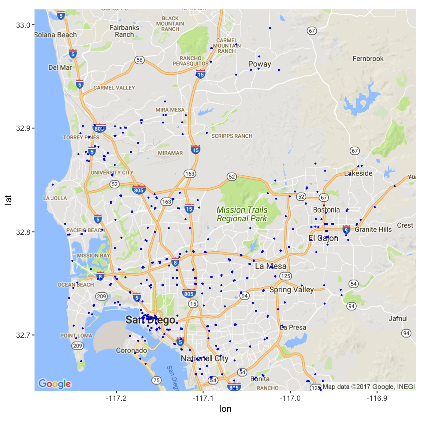

SDMTS Part 2 Static Data Exploration
In this post, we will explore the contents of the data set, and see what we can do with it!
Important Links
This post also has a supplemental R notebook. All of the code and the details of the exploration can be found there in the Part_2 folder. In this post I will only summarize the findings and display some highlights.
Introduction
The purpose of this post for me was to confirm my beliefs on what I thought the data values represented. For you, hopefully it will give you a better idea of how the data is mapped out through out this file system. Admittedly, my first exploration of this data set occurred before I knew anything about any RDBMS’s, and as a result was pretty painful. Hopefully with my summaries and the commands to put everything into postgresql makes everything crystal clear.
Mapping out a single trip
To start out, we’ll begin by mapping out a single trip. All of the code and details can be found in the R notebook. The 30 route has a special place in my heart, allowing me to surf every morning at 6 before class. Let’s begin by looking at a trip along this route!
The data we are going to need to plot this out are a trip_id, a list of stop_id’s and their coordinates, and a list of shape_pt’s and their coordinates. All of the data we need can be found in the shapes, stops, stop_times, and trips files. After a bit of munging and using the ggmap api we have the following map:
The black line represents the path taken by the trip and the red dots are all of the stops along the way.
Places
In the places file is a list of primary locations that are currently services by SDMTS. Let us take a look at its distribution on a map:
The SDMTS system seems to extend out to cover a large region. However, there is clearly a primary area of service, so let us take a closer look at that:

Conclusion
Unfortunately, the amount of interesting things that can be accomplished with this data alone is pretty limited. However, the code in notebook should help you get a more solid idea of how that static data is conveyed and how to extract useful ideas out of it. Moreover, this data serves as a necessary context for making sense out of the live feed data. In Part 3, I will cover the process I am using to gather data from the real time feed.